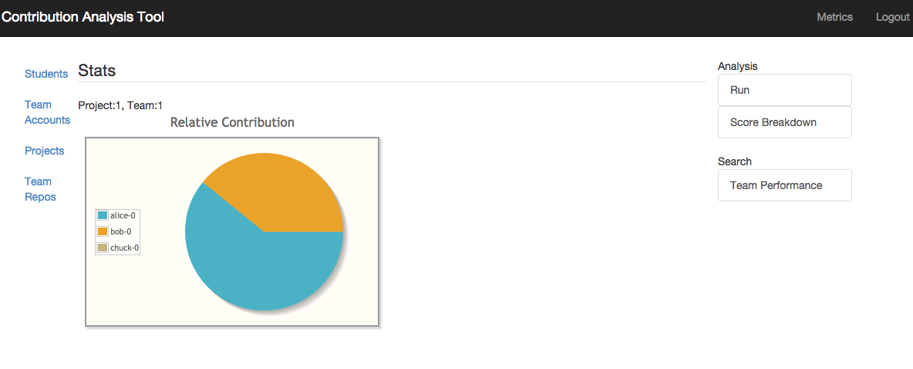

Software Contribution Analysis Tool
Contribution analysis is concerned with objectively analyzing a student’s quantifiable contributions to team projects. The contention motivating the project was that accurately evaluating student contributions is an important pedagogical task that an instructor must not leave to guesswork. 
On an architectural level, was implemented as a modular application, thereby making it possible to allow related contribution analysis plugins to be customized, added and removed. The program used Java and Jenkins to allow extensibility and probability. The program relies on open source libraries and software such as PrimeFaces (JSF library), JSF (MVC), Apache Maven (Java build tool), Apache Tomcat (servlet container), Apache Derby (embedded relational database), JUnit (unit testing). There are three important logical components: (a) Contribution analyzer; (b) Data source (e.g., a source code repository) integration component; (c) Connectors (e.g., a PMD static analysis plugin that analyzes data from a repository). The tool does not download and run Git builds itself, but relays this task to Jenkins, a popular open-source continuous-integration (CI) server. Jenkins runs various plugins as part of the build process and provides relevant statistics via a RESTful API. Jenkins also allows various build and code analysis plugins to be customized, added, and removed, thus making it making it possible for the tool to be extended. As long as a connector is available or can be written for Jenkins, the input source can be made available as part of the tool. To use the tool, an instructor would create (perhaps programmatically) GitHub repositories for the teams, assign students to teams, provide students access to their team repositories, and list all team repositories in a CSV file. The tool then imports all necessary CSV files and updates the user interface with the new data. The instructor can then run the analysis on the provided data. Some of the pertinent features of the application are: (a) integration with external build systems; (b) authentication and authorization; (c) visual comparison of student performances; (d) bulk data import; and (e) data export for external analysis.
Automating contribution analysis can reap several benefits:
- Gathering insight into student behavior by looking at how acting as an effective participant relates to the final student grade.
- Consistent grading: Random or casual grading can be detrimental to student (and team) morale, after all.
- Insight into TA behavior, by examining what class graders value, for example.
- Identifying ``troubled" relationships by getting alerts for teams that exhibit an imbalance in their participation score.
- Transparency: All teams can be graded uniformly, and the effective participation criteria can be made clear easily.
- Student peace of mind: A student can more easily report any ``free-riders" in a project.
Visual Bag of Words Application
The project’s goal was to build an object classification system by utilizing SIFT. The work combines computational photography (specifically, feature detection) with machine learning (classification and clustering).
A real life use case is an application which detects unwanted or dangerous objects, such as liquid containers on shelves, in images captured by a robot. A robot would capture photos of each shelf in a facility and then periodically compare the images to the original (or recent) images. The robot might even be a small drone (ideally with autonomous flying capability) or a rover with navigation capabilities.
There can different type of unwanted objects and shelving errors, so it is desirable to not “hardcode” what objects are deemed “dangerous.” Hence, machine learning is beneficial.
The business benefit is it can save the cost of hiring and managing human workers to do manual shelf scanning in a large library or warehouse.
A BoW model represents an object (e.g., image of a human face) as a histogram over its regions or features (e.g., eyes, nose, ears, etc). Csurka et al. (2004) demonstrated a BoW model to distinguish between examples of photos of books, cars, trees people, etc., for example.

Robot Localization using Particle and Kalman Filters
Kalman filters, EKF, k-Nearest Neighbors, Random Forests and particle filters: I helped implement several different algorithms and approaches for tackling the motion prediction problem of a micro robot. HEXBUG Nano is a micro-robot that propels forward and explores its environment by using the physics of its vibration. Different motion models were explored, including linear, circular and Brownian motion. The best results were achieved with particle filters and a simple motion model. Machine learning algorithms also produced competitive scores, but particle filters gave more consistent results, ran more efficiently, and did not require much training data.
Optimal Course Scheduler
Created a Java based course scheduler system using integer programming with the Gurobi optimization library.
The application was implemented as a 3-tier web application. Functionality was separated into different modules to avoid creating a monolithic application. Like most academic IT applications written in Java (e.g., Sakai), the architecture design was loosely based on Java EE. JavaServer Faces (JSF) framework was used to realize the MVC front-end layer. Hibernate, as a Java Persistence API (JPA) implementation, was chosen as the ORM framework. The scheduler was implemented with Gurobi Optimizer.
Choosing a 3-tier architecture and a Java EE based stack proved to be a good choice. A 3-tier architecture allows vertical and horizontal scaling. For example, more processing power can be added to the database, and a database can be clustered. In addition, Java EE allows in-memory transactions using a JPA 2nd level cache, instead of having to write to disk continuously. This allows using a JVM cluster or a data grid cluster (e.g., Infinispan) as an in-memory cache.
Userspace Threading Library
Created a userspace thread and mutex library in C. The preemptive round robin scheduler has a queue of threads to be scheduled.
The API looks like the following:
void thread_init(long period);
int thread_create(thread_t *thread;
void *(*start_routine)(void *),void *arg);
int thread_join(thread_t thread, void **status);
void thread_exit(void *retval);
int thread_yield(void);
int thread_equal(thread_t t1, thread_t t2);
int thread_cancel(thread_t thread);
thread_t thread_self(void);
thread_mutex_init(thread_mutex_t *mutex);
int thread_mutex_lock(thread_mutex_t *mutex);
int thread_mutex_unlock(thread_mutex_t *mutex);